Web-Based Campus Transport Chatbot Prototype
MECS0033-52 Artificial Intelligence, Section 52, Group 5
This is the separate Administrator Manual deliverable. The in-app Staff Demo screen is a control surface for demonstration and proof execution; it does not replace this Word manual.
| Manual item | Description |
|---|---|
| Audience | Lecturer, marker, transport administrator, or maintainer reviewing the prototype. |
| Prototype path | MECS0033-52/Group5Asg1/prototype/index.html |
| Run mode | Open index.html directly, or run python3 -m http.server 8000 from the prototype folder. |
| Main grading evidence | Interactive screen, problem-solving workflow, administrator process, screenshots, and resolution proof. |
| Data boundary | Public route names/stop sequences are used where available; timetable, ETA, delay state and walking notes are configured prototype estimates. |
TransitAI UTM turns the project report into an inspectable browser prototype. The marker can click through the phone-style app, ask transport questions, change demo time, create feedback reports, toggle staff delays, and inspect the AI reasoning evidence.
| Rubric criterion | How the prototype supports full marks | Where to verify |
|---|---|---|
| Originality / Interactive Screen | Home navigation, chatbot input, intent confidence, RAG-style evidence, timetable search, full-day route timetable, subscription-filtered alerts, feedback escalation, Staff Control Panel, and visible AI pipeline. | Figures 1-13; index.html |
| Problem Solving | Addresses common campus transport pain points: route planning, next bus timing, arrival estimate, stop lookup, service delay notification, and passenger issue reporting. | Chat, Timetable, Alerts, Feedback |
| Admin Manual | Explains component map, truthful data policy, configuration, operating steps, proof procedure, troubleshooting, and screenshot-guided usage. | This ADMIN_MANUAL.docx |
The prototype is deliberately self-contained: HTML, CSS and vanilla JavaScript only. There is no Firebase, no server, no API key and no build step. This is appropriate for a 10 percent proof of concept because the AI workflow is visible and repeatable during marking.
| File | Main object | Important functions | Responsibility |
|---|---|---|---|
| js/kb.js | KB, KBUtil | findStop, findStops, routesServing, routesBetween, nextDeparture, setClock, subscribe, setDelayed, logFeedback | Knowledge base, route/stop lookup, directional route matching, timetable estimates, subscriptions, delays and feedback state. |
| js/intent.js | Intent | classify(query) | Scores six major intents and exposes confidence in the UI. |
| js/retriever.js | Retriever | retrieve(query, k) | RAG-style token retrieval over stops, routes, FAQs, alerts and source notes. |
| js/resolution.js | Resolution | prove(user, route) | First-order resolution-refutation proof for NotifyUser(user, route, delay). |
| js/chat.js | Chat | send(text), init() | Conversation controller, session memory, response cards and AI pipeline updates. |
| js/app.js | App | showScreen, showStop, showRouteTimetable, renderAlerts, renderAdmin, runProof | Screen routing, timetable, Alerts, Feedback, Staff Control Panel and proof display. |
Runtime flow: user question -> Intent.classify() -> Retriever.retrieve() -> per-intent response handler -> grounded UI card + AI pipeline panel. Staff delay flow: Staff Control Panel toggle -> KBUtil.setDelayed() -> Resolution.prove() -> Alerts screen for subscribed users only.
Use this explanation during presentation: route names and stop sequences are aligned to public UTM/DVC/KDOJ sources where available. Timetable, ETA, delay duration, operating state and walking notes are configured estimates for demonstrating the AI concept, because no verified live UTM shuttle feed is connected.
| Data shown | Status | Administrator explanation |
|---|---|---|
| BAS A/B/C/D/E/F/G/H route labels and stop sequences | Public-list aligned | Used as route/sequence reference where public UTM/DVC/KDOJ listings are available. Do not claim they prove current live operation. |
| Stop labels such as CP, KP, K9/K10, KTC, KDOJ, KDSE, KTDI, N24, SKT, P19, T02, T08, V01 | Public stop labels | Used as route-stop codes because they appear in public route listings. |
| FKE mapping | Partially verified | Mapped to P19 / FKE Area because public listings include P19 and FKE-area stop references. Production should confirm exact shelter. |
| FC mapping | Prototype alias | Mapped to N24 / Cluster Area for the report demo. Exact current FC shuttle-stop mapping was not found. |
| PSZ Library | Landmark only | The app can identify PSZ as a campus landmark, but it does not invent a direct shuttle route to PSZ. |
| Next bus, full-day timetable, service window, ETA and delay duration | Prototype estimate | Calculated from configured operating windows/headways and demo time. Not an official live timetable. |
| Delay alert | Prototype simulation | Staff toggle simulates transport staff publishing a disruption so the logic proof and alert workflow can be shown. |
Sources checked on 2 July 2026: UTM DVC Development shuttle bus schedule page, KDOJ UTM Bus Schedule route list, and the UTM JB 2025 shuttle timetable PDF.
The following figures are current screenshots from the redesigned prototype. The arrows identify the control or evidence to point at during the presentation.
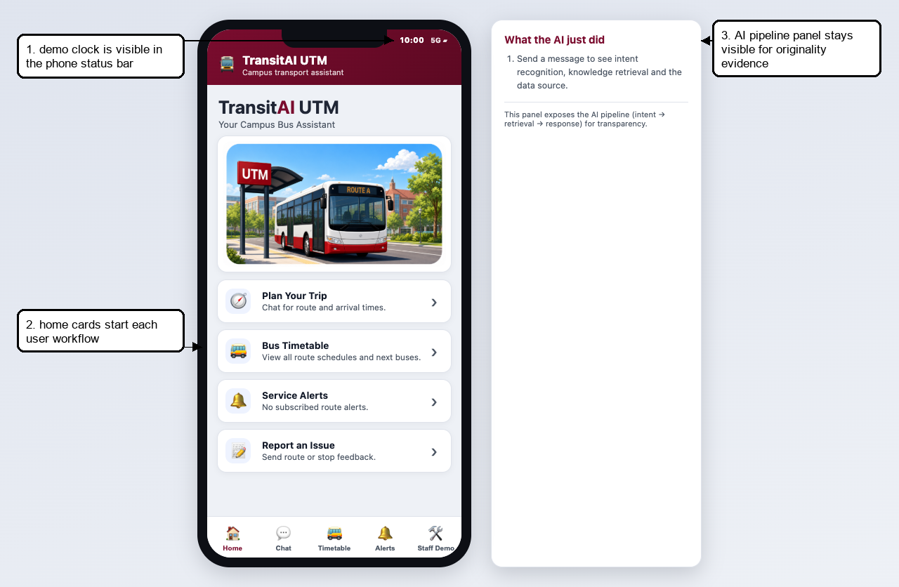
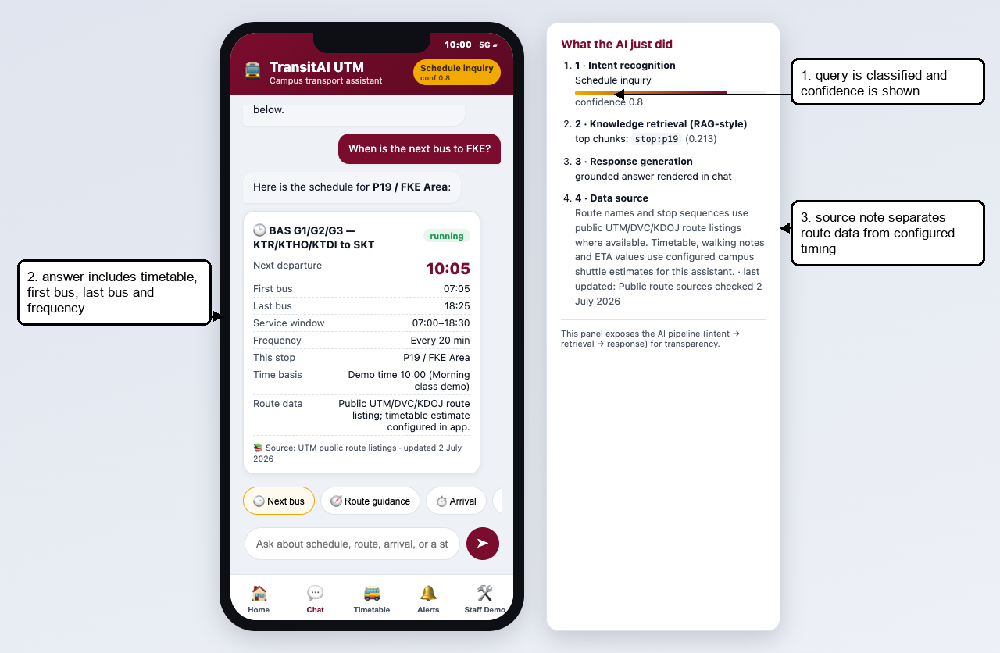
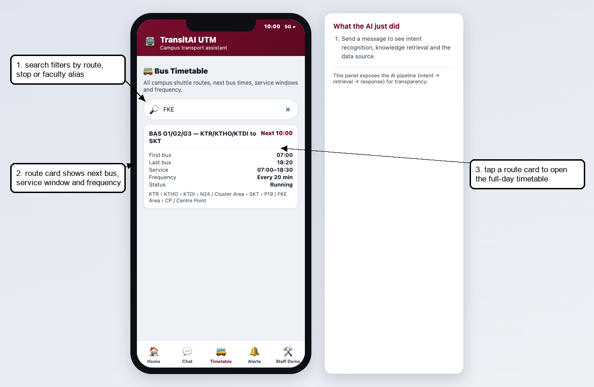
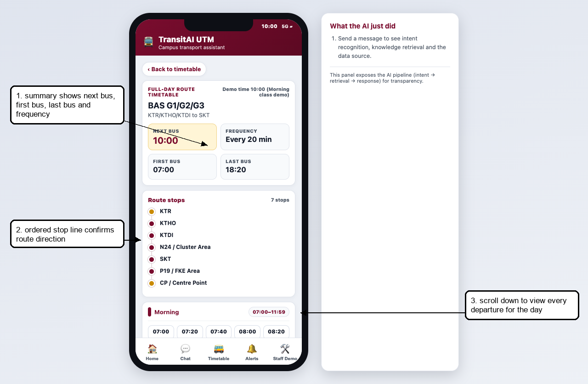
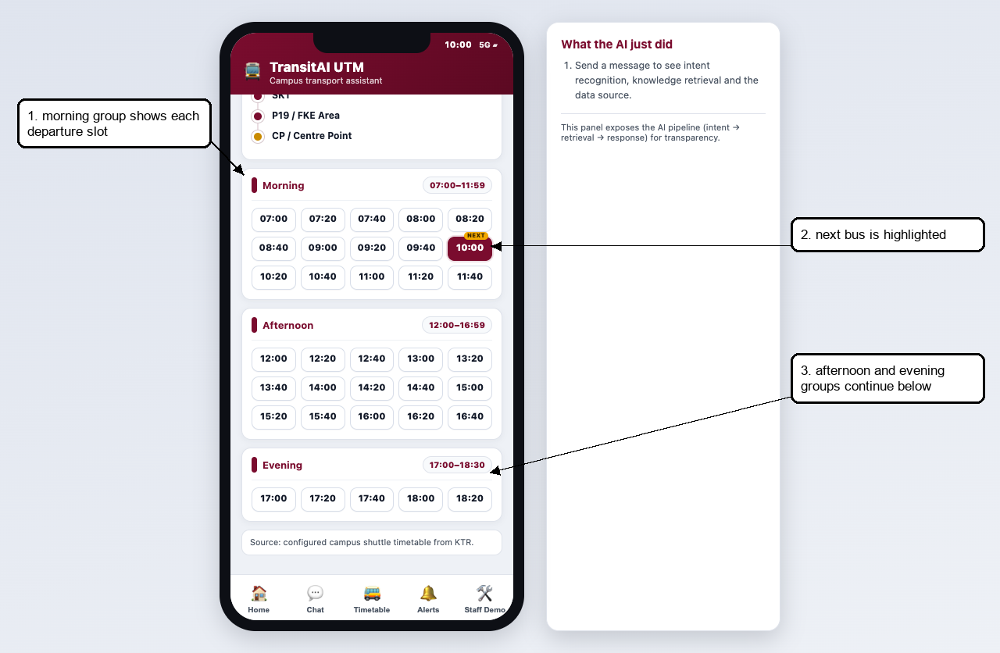
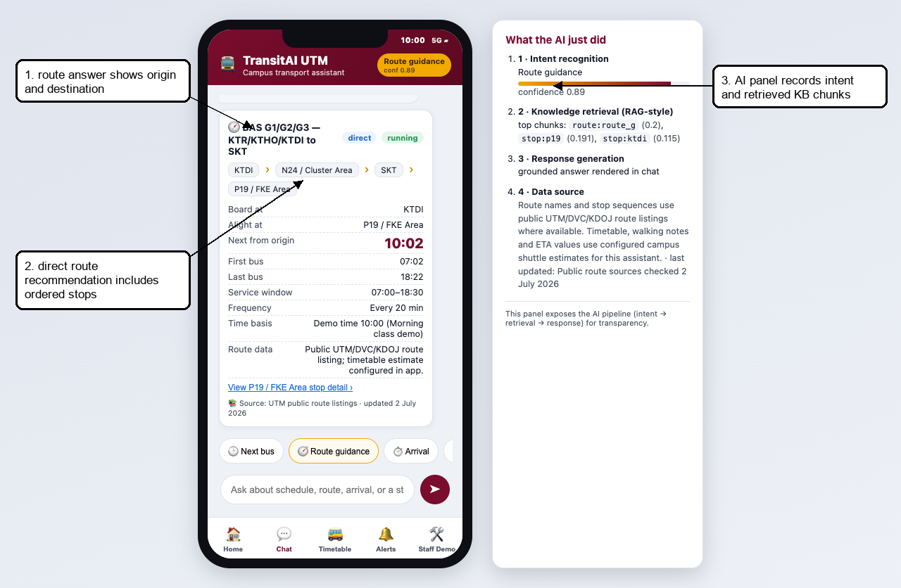
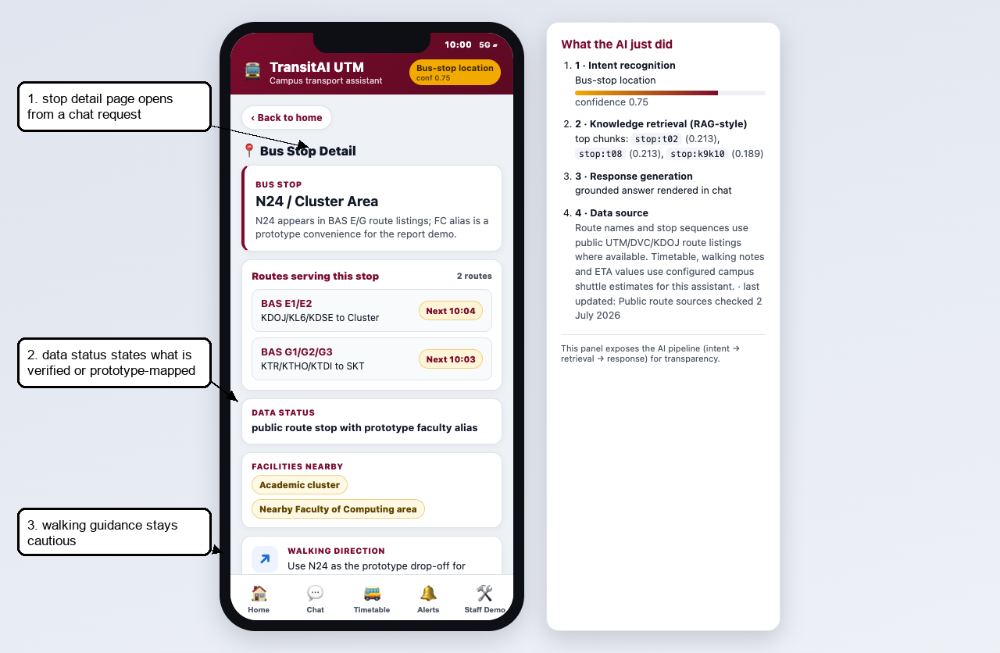
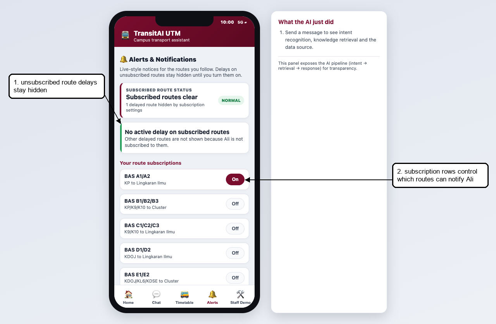
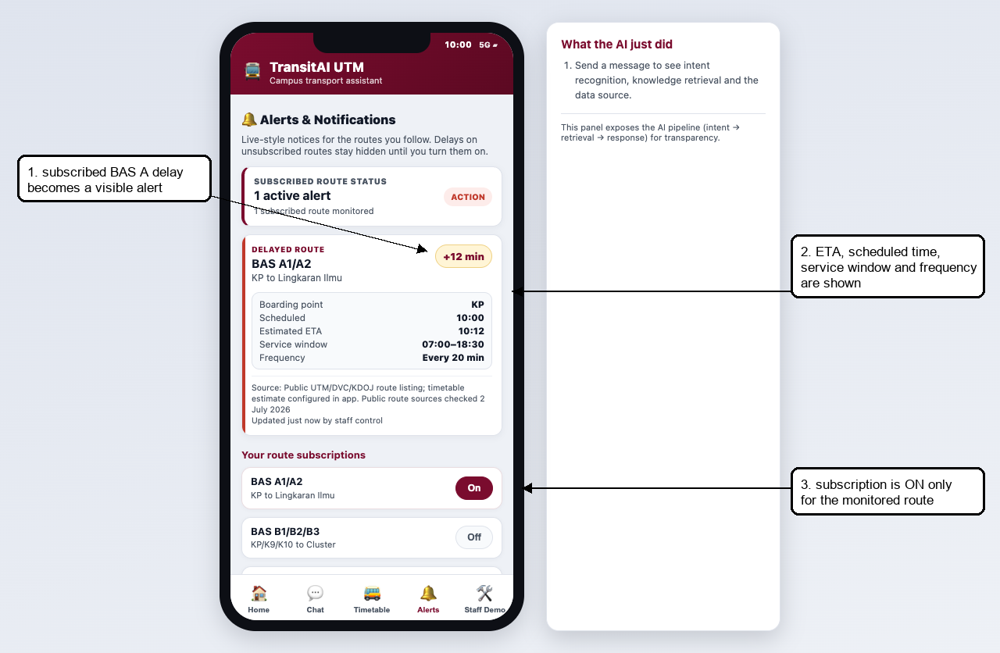
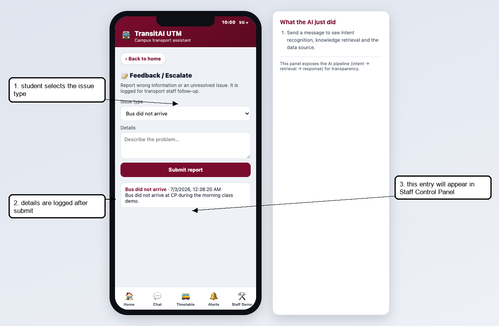
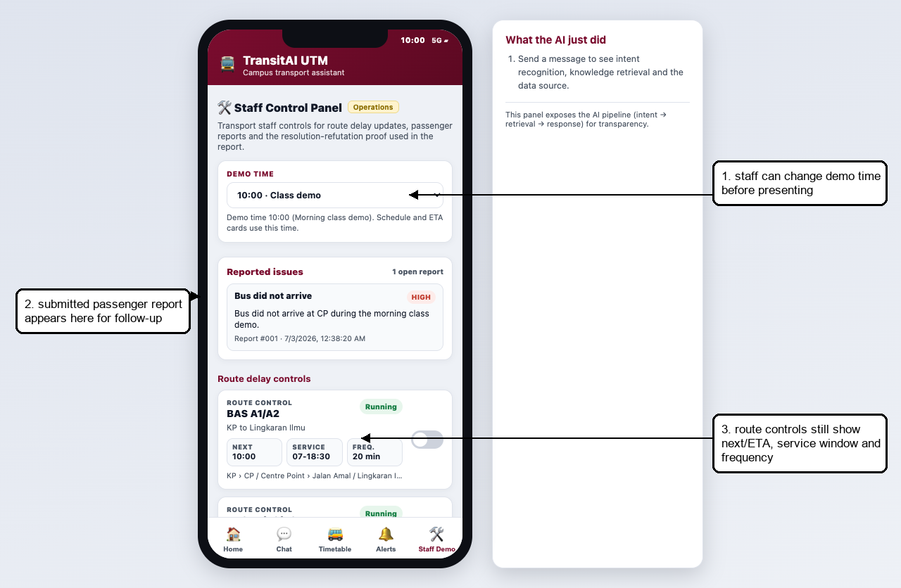
The Staff Control Panel is inside the prototype so the marker can trigger repeatable proof scenarios. The Word manual remains the separate admin deliverable.
| Clause | Meaning |
|---|---|
| P1 WantsRouteAlert(ali, route_a) | Ali subscribes to BAS A route alerts. |
| P2 Delayed(route_a) | BAS A is currently marked delayed by staff. |
| P3 not Delayed(r) OR NeedDelayNotification(r) | A delayed route requires a delay notification. |
| P4 not WantsRouteAlert(u,r) OR not NeedDelayNotification(r) OR NotifyUser(u,r,delay) | A subscribed user is notified when a notification is needed. |
| Negated goal: not NotifyUser(ali, route_a, delay) | Resolution assumes the opposite and derives a contradiction. |
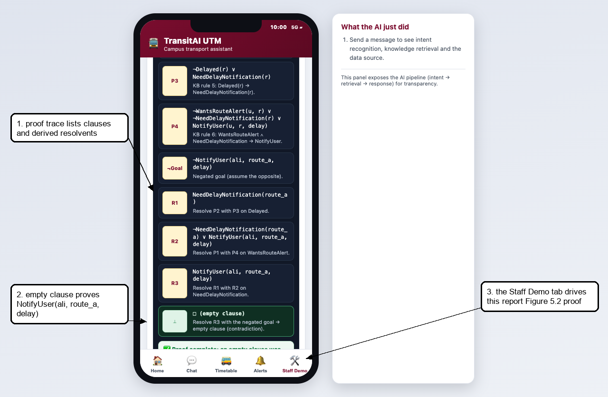
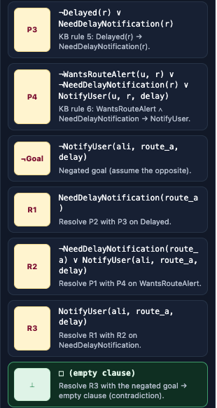
Stops are configured in KB.stops inside js/kb.js. Use aliases for names students actually type, and always include a status field that states whether the mapping is public, verified, or prototype-only.
{ id: "p19", name: "P19 / FKE Area", aliases: ["p19", "fke", "electrical"], status: "public stop/area label with faculty alias", facilities: ["Faculty area", "Lecture halls"], walking: "Alight at P19 for the FKE-area prototype. Confirm the exact shelter in production." }
Routes are configured in KB.routes. The full-day timetable is generated from operating.start, operating.end and headway. This keeps the demo repeatable without pretending to use live GPS.
{ id: "route_g", name: "BAS G1/G2/G3 - KTR/KTHO/KTDI to SKT", stops: ["ktr","ktho","ktdi","n24","skt","p19","cp"], operating: { start: "07:00", end: "18:30" }, headway: 20, source: "Public UTM/DVC/KDOJ route listing; timetable estimate configured in app." }
The default demo time is 10:00 so presentation does not depend on the real current time. Staff can switch to 08:00, 10:00, 13:00, 17:30, 20:30 or live device time from Staff Control Panel.
| Symptom | Likely cause | Fix |
|---|---|---|
| Blank screen | Script load issue or missing file | Reload and ensure kb.js, intent.js, retriever.js, resolution.js, chat.js and app.js are loaded in index.html order. |
| Schedule says closed now | Demo/live clock outside service window | Staff Control Panel -> Demo time -> 10:00 for normal presentation. |
| Wrong route result | No directional route sequence serves origin before destination | Use CP as interchange or add a verified route sequence. Do not invent official data. |
| No delay alert appears | Ali is not subscribed to the delayed route | Turn on the route subscription or use BAS A, which is seeded for the proof. |
| Proof does not run | Route is not marked delayed or user lacks subscription | Toggle BAS A delayed and confirm KB.subscriptions contains ali/route_a. |
| Feedback not visible to staff | Staff Control Panel has not been opened/refreshed after submission | Open Staff Control Panel; renderStaffIssues() reads KB.feedbackLog. |
| Teacher asks if times are official | Prototype uses configured estimates | State clearly: route names/sequences are public-list aligned; timing/ETA/delay are POC estimates. |